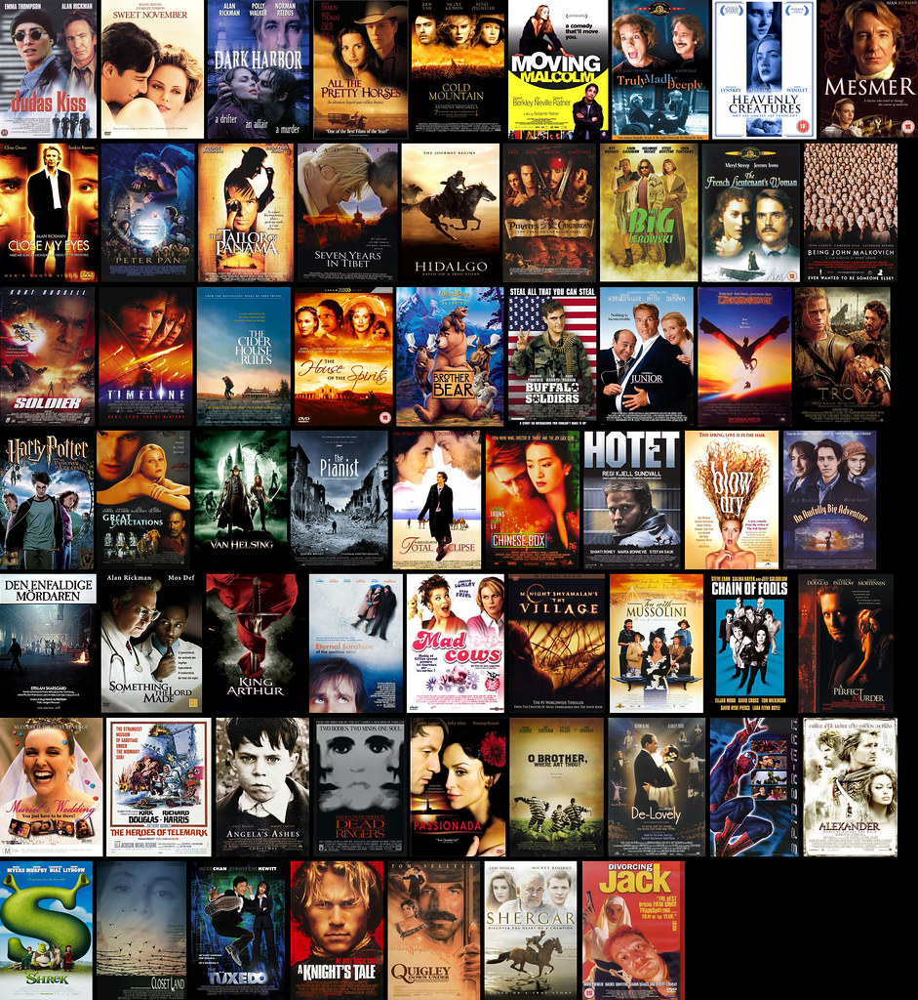

Watching movies is one of my favourite things to do while I have some free time on my hands, as it is a great way to entertain yourself.
Soccer better known as football, is one of my favourite sports, that I have been playing ever since I was eight years old. It is one of the most fun sports to play and watch as a spectator.

Cars have been my passion ever since, I was a little kid, as my dad works at a car dealership which had the most exotic cars showing up everyday. Through this I accelerated my passion for cars.

Some of my favourite cars: